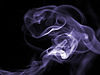

gaseous

Definition: Gas is one of the four fundamental states of matter. The others are solid, liquid, and plasma.A pure gas may be made up of individual atoms (e.g. a noble gas like neon), elemental molecules made from one type of atom (e.g. oxygen), or compound molecules made from a variety of atoms (e.g. carbon dioxide). A gas mixture, such as air, contains a variety of pure gases. What distinguishes a gas from liquids and solids is the vast separation of the individual gas particles. This separation usually makes a colourless gas invisible to the human observer.
Source: Wikipedia
Wikipedia Page (Something wrong with this association? Let us know.)
Wikidata Page (Something wrong with this association? Let us know.)
Occurs in: